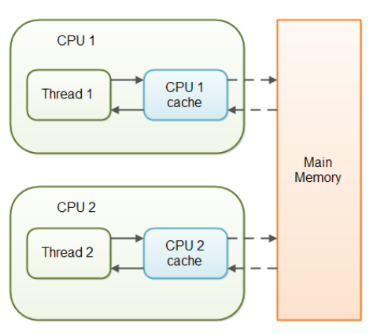

Java语言提供了一种稍弱的同步机制，即Volatile变量，用来确保变量的更新操作通知到其他线程。volatile变量不会被缓存在寄存器或对其他处理器不可见的地方，因此在读取volatile类型的变量时总会返回最新写入的值。
volatile变量具备两种特性：
变量可见性就是保证该变量对所有线程可见，可见性是指当一个线程修改了变量的值，那么新值对与其他线程是可以立即获取的。
禁止指令重排序；
在访问volatile变量时不会执行加锁操作，所以不会使线程阻塞，因此volatile是比synchronized关键字更轻量级的同步机制。
volatile适合场景：一个变量被多个线程共享，线程直接给这个变量赋值。

当对非volatile变量进行读写时，每个线程先从内存拷贝变量到CPU缓存中。如果计算机有多个CPU，每个线程可能在不同的CPU上被处理，这意味着每个线程可以拷贝到不同的CPU cache中。而声明变量是volatile的，JVM保证了每次读变量都从内存中读，跳过CPU cache这一步。
适用场景：
对于volatile变量的单次读写操作可以保证原子性的，如long和double类型变量，但是并不能保证i++这种操作的原子性，因为本质上i++是读、写两次操作。在某些场景下可以代替synchronized。但是volatile并不能完全取代synchronized的位置，只有在一些特殊的场景下，才能适用volatile。总的来说，必须同时满足下面两个条件才能保证在并发环境的线程安全。
1）对变量的写操作不依赖于当前值（比如i++），或者说是单纯的变量赋值（boolean flag=true）。
2）该变量没有包含在具有其他变量的不变式中，也就是说，不同的volatile变量之间，不能互相依赖。只有在状态真正独立于程序内其他内容时才能使用volatile。